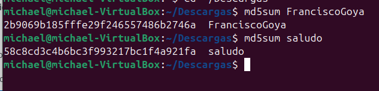
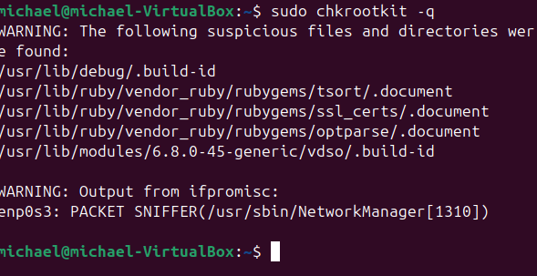

PRACTICA 1
Integridad de datos Md5sum
como hacer hash de los siguientes archivos
- hash de saludo: con el comando md5sum
- has de francisco de goya : con el comando md5sum
comprobacion de que los archivos no han sido modificados
despliegue para ver la imagen

- etc/passwdcon el comando md5sum comprobariamos si los archivos ansido modificados
- bin/bashcon el comando md5sum
- una rchivo cualquiera de tu directorio personal con el comando md5sum
indicar pros y contras de desactivar los usb de los ordenadores de los empleados
? que alternativas podemos ofrecer al trabajador para sacar la informacion del equipos?
- PROS de desactivar los USB
- prevencion contra virus
- proteccion de nuestros datos
- proteccion contra uso no autorizado
- contras de desactivar los USB
- el usu de perifericos la mayoria de las computadoras utilizan ratos y teclados para conectarse
- En el gaming por que un teclado o un mouse inalambrico te daria mas retardo de respuesta que un teclado o mouse que se conecte al usb del ordenador en un juego
se busca que los perifericos tengan el menor tiempo de respuesta posible
- la instalacion de un sistema operativo en nuestro ordenador no lo podriamos hacer sin un usb
- alternativas para sacar la informacion del equipos?
- almacenar la informacion en la nube por ejemplo google drive entre otros muchos que te ofrecen un espacio limitado y gratuito
- crear una red compartida de archivos esto se puede hacer desde el explorador de archivos en el caso de windows
aunque un usuario tenga privilegios limitasdos en una maquina ?todavia es un peligro potencial?
no, por que ya no tiene privilegio de descargar o instalar software sospechoso
¿Resulta totalmente fiable utilizar las aplicaciones descargadas de Google Play?
no por que diversas aplicaciones logran pasar los sistemas de seguridad y corremos el riesgo de infectarnos de algun virus pero siempre que queramos instalarnos una
aplicacion hay que fijarnos en los comentarios y en la reputacion que tenga dicha aplicacion que nos diran si es fiable o no
¿Cómo detectarías un ataque DoS? ¿Qué harías para defenderte?
- Con el Monitoreo del trafico de red utilizaria herramientas con wireshark
- implementado mas corta fuegos para la deteccion de los bots
Realiza una comprobación de la integridad de archivos del sistema con
Windows. Utiliza el comando sfc. Lee la documentación que hay en el índice del curso.
Debes añadir las capturas de pantalla
Realiza lo mismo con linux utilizando el comando rkhunter. Debes añadir las
capturas de pantalla

Busca y detecta si hay rootkits en tu sistema linux con la herramienta chkrootkit
de linux. Debes añadir las capturas de pantalla.

Piensa en tecnicas para
- con una tecnica de phishing que consiste en crear una interfaz de autentificacion falsa que imita a la original de la pagina y hacer que la victima introdusca los datos
- paylods que consiste en insertar una usb a su ordenador que contiene un codigo malisioso y que se cree una puerta trasera para yo poder tener acceso a sus documento
- diccionario y Ataques de Fuerza Bruta consiste en utilizar una lista de contraseñas para lograr cifrar la contraseña
- diccionario y fuerza bruta consiste en probar multiples conbinaciones con el diccionaruo
- malwareintroducir un malware mediante un usb que contiene un virus el cual va infectar todo el dispositivo
Piensa en mecanismos de defensa para los sigueintes amenazas
- incendios salidas de emergencia , señalisacion de los extintores ,sensores de humno , sistema de rociadores automaticos que estan diseñados para detectar el calor y activar y empezaar a echar agua
- inundaciones-ubicar los equipos en una zona segura en areas elevadas lejos de las tuberias,sensores para detectar agua y activar las alarmas y actuar de una manera inmediata
- robosinstalar camaras de seguridad,poner alarmas de seguridad ,control de acceso fisico ingresar con credenciales a los dispositivos
- desactres naturales hacer copias de seguridad de manera constante o tener otros servidores en otra ciudad o pais por lo que si uno se aberia el otro se pone en marcha
- apagones instalar un sistema de alimentacion ininterrumpida para encasos de que se vaya la energia se active este generador